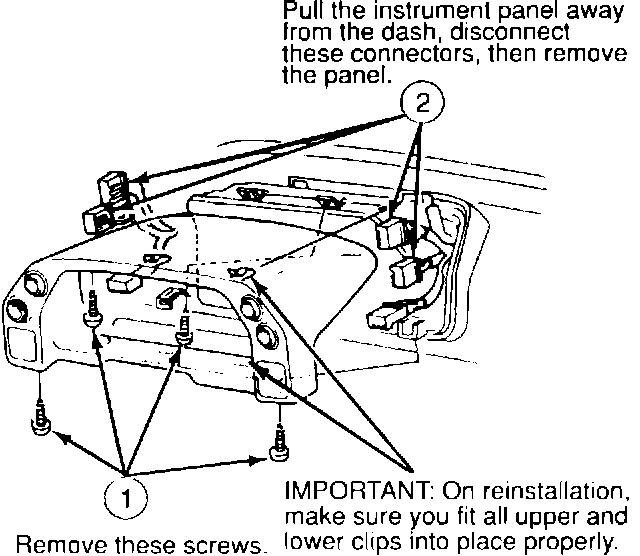
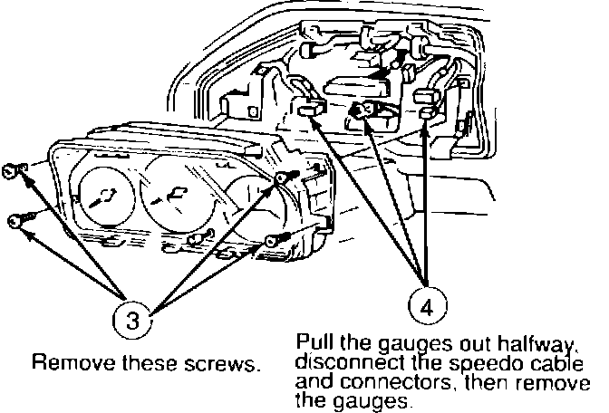
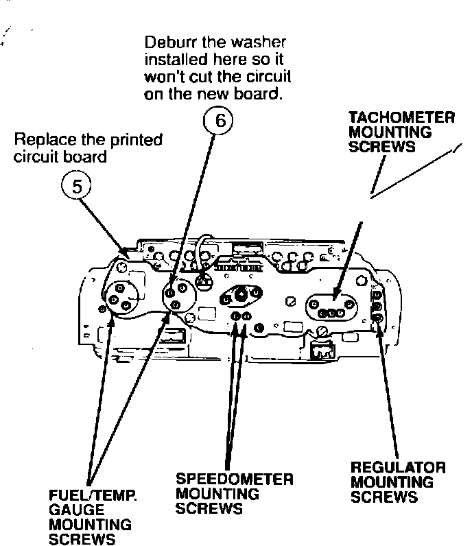

Fuel and Temperature Gauges Erratic
91acura01 January 14, 1991YEAR MODEL
'88 -'90 LEGEND
VIN APPLICATION BULLETIN NO.
ALL
90-012
Erratic "Fuel and Temperature Gauges (Supersddes 90-012, dated June 25, 1990)
SYMPTOM
The fuel gauge goes to FULL and the temperature gauge goes to HOT at the same time. It may happen more often in hot weather.
PROBABLE CAUSE
The printed circuit has been cut by sharp edges on one of the washers that connects the circuit to the gauges and holds the circuit board in place.



CORRECTIVE ACTION
Replace the circuit board and deburr the washer.
PARTS INFORMATION
Printed circuit panel:
'88 - '90 without info center ... 78108-SD4-A01
'88 - '90 with info center ..... 78108-SD4-A81
WARRANTY CLAIM INFORMATION
In warranty: The normal warranty applies.
Out-of-warranty: Any repair performed after warranty expiration may be eligible for goodwill consideration by the District Service Manager. You must request consideration, and get the DSM's decision, before starting work.
Operation number: 745141
Flat rate time: Replace circuit board: 0.9 hour
Failed P/N: 78108-SD4-A01
Defect code: 066
Contention code: B99